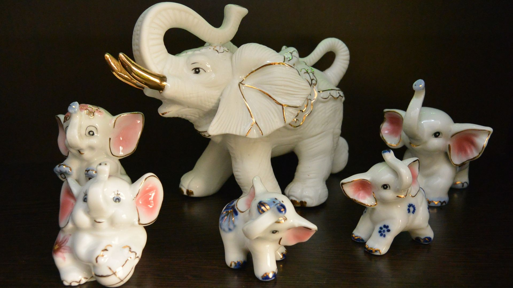
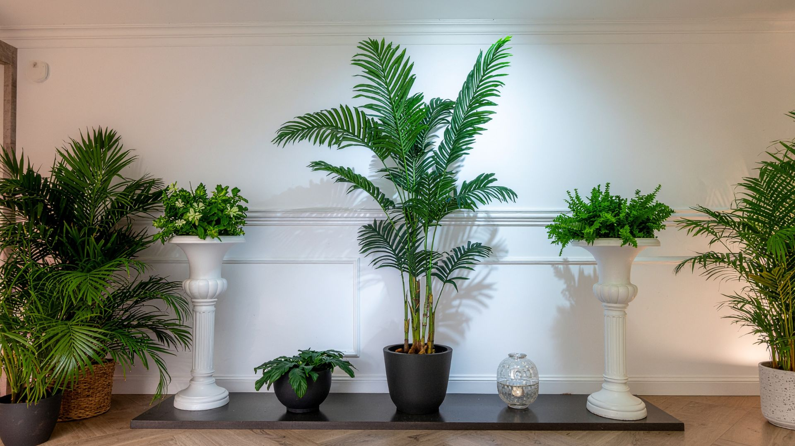

Cactus
Especies de formas marcadas, crecimiento pausado y gran presencia visual. Ideales para espacios luminosos y composiciones de carácter mineral.
Rincón especializado
Cactus y suculentas seleccionados por su carácter, textura y capacidad de adaptarse a espacios luminosos. Un rincón para descubrir especies resistentes, composiciones minerales y consejos de cuidado presencial.
Sol, textura y resistencia
El Cactuario reúne plantas que convierten la sequedad en belleza. Espinas, geometrías, reservas de agua y floraciones inesperadas conviven en una selección que cambia con la temporada y se entiende mejor en persona.
Te ayudamos a elegir según exposición, tamaño, tipo de maceta y nivel de mantenimiento. Porque incluso las plantas más resistentes necesitan estar en el lugar adecuado.
No es una colección cerrada: es una selección viva que cambia según la temporada, la disponibilidad y el criterio del equipo.
Especies de formas marcadas, crecimiento pausado y gran presencia visual. Ideales para espacios luminosos y composiciones de carácter mineral.
Variedades de hojas carnosas, colores suaves y siluetas compactas. Perfectas para macetas, centros y rincones donde la textura importa.
Ejemplares singulares para quienes buscan una planta con presencia escultórica, proporción y personalidad propia.
Ideas para combinar plantas, áridos, recipientes y alturas, creando escenas de bajo consumo hídrico con aspecto natural.
Familias y formas
No hablamos de un listado fijo: es una muestra viva de siluetas, tamaños y carácteres. Estas familias suelen estar presentes y se eligen mejor comparándolas en tienda.
Volúmenes compactos, simetrías redondas y presencia escultórica. Funcionan muy bien en macetas individuales o en grupos de distintas alturas.
Perfiles altos que aportan verticalidad a terrazas y entradas. Piden espacio, buena luz y macetas estables por su peso y crecimiento.

Echeverias, aeoniums y formas similares: geometría suave, colores que cambian con la luz y composiciones muy gráficas en bandejas o macetas bajas.
Hojas carnosas, propagación sencilla y aspecto frondoso en miniatura. Ideales para quien empieza y quiere aprender observando el crecimiento.

Agaves, yuccas y especies de porte escultórico que dialogan con el paisaje balear. Presencia fuerte, bajo riego y gran impacto en jardines secos.

Bandejas, cuencos y escenas ya plantadas para regalar o colocar directamente. Una forma de llevarse una idea completa, no solo una pieza suelta.
Belleza de bajo consumo hídrico
El mundo de los cactus y las suculentas invita a observar más y regar menos. Su belleza no está en la abundancia, sino en la forma, la paciencia y la adaptación.
Por eso el asesoramiento es importante: elegir bien la exposición, el sustrato, la maceta y el drenaje suele marcar la diferencia entre una planta que sobrevive y una planta que se integra en el espacio.
Clima de la isla
En Valldemossa la luz es intensa, el verano seco y el viento a veces salado. Muchas especies del Cactuario están pensadas para resistir esas condiciones con elegancia, no a pesar de ellas.
Por eso insistimos en ver el espacio real: una terraza orientada al sur no se comporta igual que un ventanal norte. El consejo presencial ayuda a traducir el clima mediterráneo a decisiones concretas de especie, maceta y ubicación.
Calendario vivo
El Cactuario no se ve igual en primavera que en pleno verano. Algunas piezas florecen con insistencia; otras prefieren el silencio. Conocer ese ritmo evita prisas y malentendidos.
Con más horas de luz, muchas especies activan brotes, flores breves y cambios de color. Es buen momento para elegir, trasplantar con criterio y revisar exposición.
El riego se ajusta, las hojas pueden intensificar tonos y conviene preparar las plantas para meses más frescos. Pregunta en tienda qué conviene mover o proteger.
Menos agua, más paciencia. Algunas especies descansan; otras piden un rincón más protegido. Observar sin intervenir demasiado suele ser la mejor decisión.
Cada especie tiene sus matices, pero estas preguntas ayudan a orientar mejor la elección en tienda.
La mayoría agradece mucha luz, pero no todas responden igual al sol directo, especialmente en interior o tras un cambio de ubicación.
Terraza, balcón, jardín seco o interior luminoso cambian la elección de especie, tamaño y recipiente.
El drenaje es clave. En cactus y suculentas, el exceso de agua suele ser más problemático que la falta de riego.
Son plantas resistentes, pero no invisibles. Observarlas, girarlas y adaptar el riego ayuda a que mantengan su forma.
Consejo SA Jardinería: no todas las plantas de bajo riego son iguales. Pregunta antes de llevarte una especie si tienes dudas sobre sol, viento, humedad o maceta.
Más que la planta
Un cactus bien elegido puede ir mal si la maceta no drena o el sustrato retiene demasiada humedad. En SA Jardinería lo vemos como un conjunto, no como piezas sueltas.
Cerámica, terracota, piezas naturales y formatos bajos o altos según la especie. Te orientamos sobre tamaño, peso y proporción antes de decidir.

Mezclas drenantes, grava, piedra volcánica y elementos minerales para composiciones secas. El sustrato correcto marca la diferencia en Mallorca.

Regaderas, pulverizadores y orientación sobre frecuencia según estación. Menos suele ser más: te explicamos cuándo observar y cuándo actuar.
También puedes explorar Macetas en Garden y la Tienda de complementos — siempre con consejo presencial.
Cactus y suculentas pueden aportar estructura, volumen y bajo mantenimiento en espacios expuestos al sol.
Las especies compactas funcionan muy bien en composiciones pequeñas, siempre que la luz y el drenaje acompañen.

Algunas variedades pueden vivir en interior si reciben claridad suficiente y se evita el exceso de riego.
Ver, tocar y preguntar
Recorrer el rincón con calma permite comparar tamaños, comparar texturas y descubrir piezas que en una foto no se ven igual. Nuestro equipo está cerca para orientar sin prisa.
El Cactuario se disfruta de cerca: cada planta tiene una silueta, una textura y un ritmo de crecimiento propio.
Visita presencial
Estamos en la carretera de Valldemossa. Recorre el Garden, compara especies y pregunta al equipo antes de elegir.